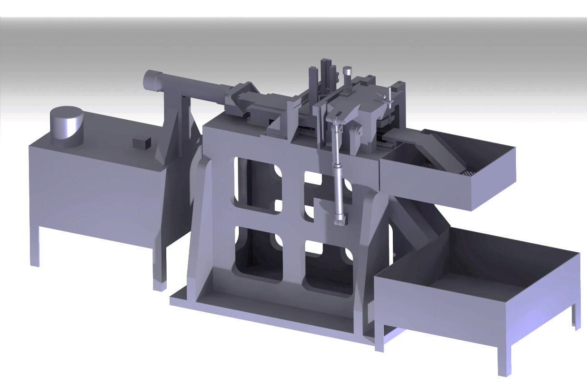

Pranav Ladkat
Graduate Student, Mechanical Engineering
University at Buffalo, The State University of New York.
Application Engineer (CFD),
ANSYS Inc.
November 2011 - July 2013
I worked as an "Application Engineer" and provided Technical Support for ANSYS' CFD tools to Automotive and Oil and Gas sectors in North America. I also worked with development team for advanced meshing workflows. The technical support mainly included solving customer's difficulty in geometry cleanup, meshing, setting up solution cases, post-processing results, coming up with best practices for complex problems and documenting those best practices, etc. I have delivered various trainings on ANSYS' products to new users through classroom and webinars.
Overall, I received a vibrant work experience at ANSYS Inc. and I thoroughly enjoyed working with talented people in the field of CFD. I received a good exposure from applications of CFD to product development.
Design Engineer, Intern
Kirloskar Oil Engines Ltd.
July 2010 - May 2011
My Capstone project - “To design Special Purpose Machine for cutting material from thrust washer” - was sponsored by Kirloskar Oil Engines Limited, Pune.
My responsibility during Internship was to design a Special Purpose Machine which will remove excess material from Thrust Washers used in Oil Engines. Design was aimed at processing 8,000 washers per shift (9 Hrs.). We opted for Surface Broaching Cutting process and devised an operating mechanism. To meet cutting quality requirements, we decided upon designing custom Surface Broach Tool. It was designed by studying multiple design points considering various tool parameters versus resulting cutting forces. To incorporate all design changes, we designed supporting structure, washer stacking assembly, tool assembly, burr removal mechanism, hydraulic cylinders (for providing cutting force), etc. We modeled entire machine using CATIA V5 and optimized it using ANSYS. We automated the machine and achieved cycle time for cutting process in 4 seconds.

{kind=link}